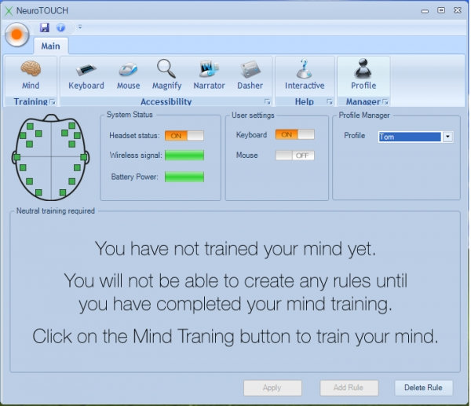

Recent Works


I am an experienced software engineer with more than 6 years experience in the financial services sector. In my current role, I am an Associate in the Securities division at Goldman Sachs, where I develop and manage front-to-back trading systems. I work closely with the trading desk across a number of functions including execution, inventory optimisation, position keeping and trade flows/booking. Before that, I was a Senior Developer at the Reserve Bank of Australia where I successfully designed and developed the New Payment Platform (NPP) which enables real-time payments across Australia. I hold a Bachelor of Software Engineering with First Class Honours at Monash University. I am currently pursuing the Master of Commerce degree part time at the University of Sydney. Key technologies: Full Stack Development, Java, .NET, Python, Angular, React, Hazelcast, Elastic Search, SQL, Amazon Web Services (AWS), Google Cloud Platform (GCP)
Grade: First Class Honours (H1)
I was consistently the top achieving student in my course and successfully graduated with First class Honours (H1). I was awarded a joint scholarship between Monash and Cybec Foundation to undertake an 8-week summer semester international research project at the University of California, San Diego (UCSD). Below are some of the awards that I received during my studies:
Grade: High Distinction
I graduated with the highest grade across all Monash College campuses in Australia and overseas. I was awarded the Monash College Melbourne Award and the Monash College Global Award.
Grade: High Distinction
I received a full tution fee scholarship to undertake a web development course at SKT-SSU IT Training center. I also learnt Korean as part of the program.Grade: High Distinction
I started my IT journey at FPT-Aptech. During my studies at FPT-Aptech, I developed a photo library website using ASP.NET, a human resource management application using .NET and WinForm, and a real estate website using J2EE (Java, EJB and JSP).
I develop mainly in Java and Javascript, but I also have
experiences working with .NET.
I also have an interest in cloud computing and big data.
I like to
attend technology meetups and courses in my spare time to improve my skills.
If you’d like to find out more about me, please connect with me on Linkedin